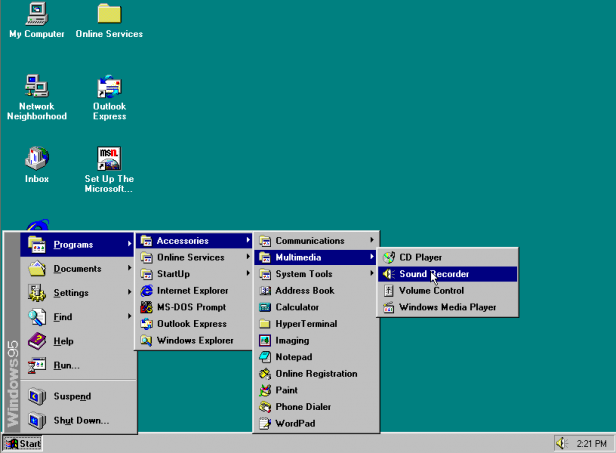

Windows 95 Menu Sandbox
← Home
Table of Contents
Some Inspirational Images from Windows 95
Live Win95 Menu Mock-Ups
Start Menu Design
Pop-Up Menu Design
Some Inspirational Images from Windows 95

Live Win95 Menu Mock-Ups
Start Menu Design
Programs
Documents
Settings
Find
Help
Run
Sh
u
t Down
Pop-Up Menu Design
Accessories
StartUp
Microsoft Exchange
MS-DOS Prompt
The Microsoft Network
Windows Explorer
↑ Top